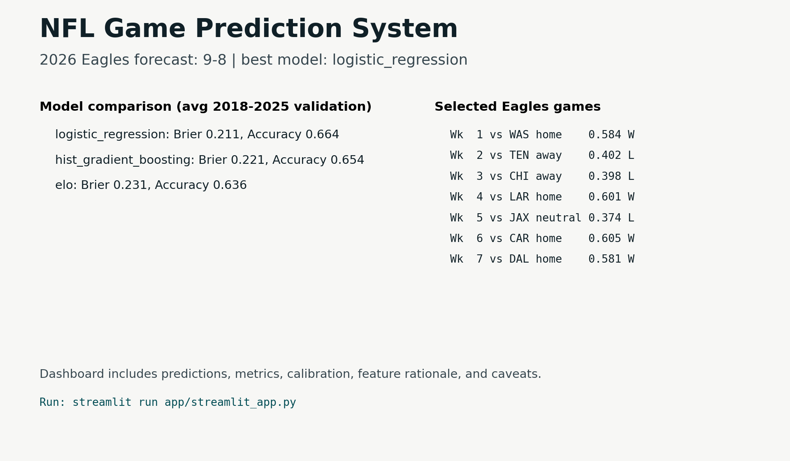

Project Overview
This project treats game prediction as a probability-quality problem, not just a win/loss classification task. It builds leak-free pregame features, compares transparent and ML models, and reports calibration so predictions can be interpreted responsibly.

Model Comparison
| Model | Games | Brier | Log Loss | Accuracy |
|---|---|---|---|---|
| Logistic Regression | 2,127 | 0.2111 | 0.6100 | 66.4% |
| Histogram Gradient Boosting | 2,127 | 0.2210 | 0.6372 | 65.4% |
| Elo Baseline | 2,127 | 0.2312 | 0.6629 | 63.6% |
What It Demonstrates
Leak-free features
Rolling form, Elo state, rest, market context, and environment are computed from pregame information.
Time-aware validation
Models train on earlier seasons and predict later seasons to match the real forecasting problem.
Dashboard communication
The Streamlit app presents forecasts, model metrics, calibration, caveats, and reviewer-ready artifacts.
Repository Files
The full project code lives in this folder. Start with README.md for setup,
MODEL_REPORT.md for the modeling write-up, and app/streamlit_app.py
for the dashboard.